Radiance field methods (e.g.~3D Gaussian Splatting) have emerged as a powerful paradigm for novel view synthesis, yet their appearance modeling often relies on Spherical Harmonics (SH), which impose fundamental limitations. SH struggle with high-frequency signals, exhibit Gibbs ringing artifacts, and critically fail to capture specular reflections - a key component of realistic rendering. While alternatives like Spherical Gaussians offer improvements, they introduce significant optimization complexity. We propose Spherical Voronoi (SV) as a unified framework for appearance representation in 3D Gaussian Splatting. SV partitions the directional domain into learnable regions with smooth boundaries, providing an intuitive and stable parameterization for view-dependent effects. For diffuse appearance, SV achieves competitive results while maintaining simpler optimization compared to existing alternatives. For reflections - where SH fundamentally fail - we leverage SV as learnable reflection probes, taking reflected directions as input following principles from traditional graphics. This formulation achieves state-of-the-art results across both synthetic and real-world datasets, demonstrating that SV offers a principled, efficient, and general solution for appearance modeling in explicit 3D representations.
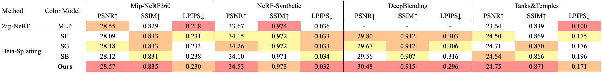
These interactive viewers illustrate our soft Voronoi partition both in 2D (on the circle) and on the sphere. On the left, a 2D polar Voronoi shows sites on the unit circle and their soft partition; on the right, a spherical Voronoi is rendered as an environment map and visualized on a glossy ball. The number of sites controls the partition complexity, while temperature controls the sharpness of the boundaries.
The figure below summarizes an experiment where different spherical representations were used to fit the same scalar function defined on the unit sphere. Each method was trained 100 times from random initializations, allowing us to analyze both accuracy and stability across runs.
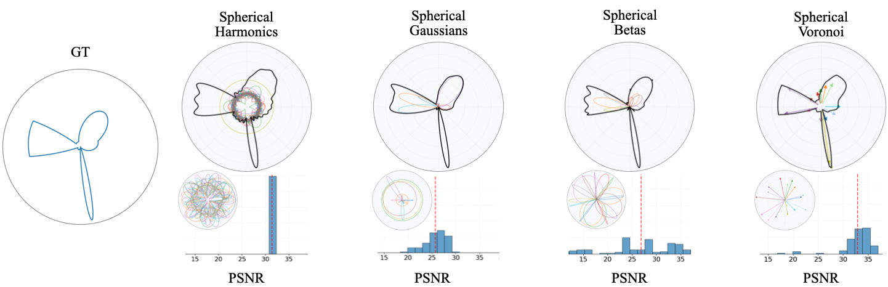
Top: reconstructions after optimization. Bottom-left: random initializations. Bottom-right: PSNR histograms over 100 runs.
The top row highlights the qualitative behavior of each model, while the histograms quantify the distribution of PSNR values across the 100 runs. Spherical Harmonics (SH) converge consistently to the same solution, showing minimal variance but limited accuracy. Because SH rely on globally supported basis functions, they cannot represent discontinuities or sharp angular variations. As a result, reconstructions appear overly smooth and exhibit the well-known Gibbs effect near discontinuities — oscillatory artifacts that cap the mean PSNR at a relatively low value.
Spherical Gaussians (SG) and Spherical Betas (SB) introduce localized lobes that can model high-frequency content, but their optimization is highly sensitive to initialization. Depending on where lobes start, gradients may vanish or compete, leading to large PSNR variance: a few runs reach good fits, while others get stuck in poor local minima. The wide histograms in the figure clearly illustrate this instability.
In contrast, our Spherical Voronoi (SV) representation yields both high accuracy and lower variance across all 100 runs. By defining a differentiable, soft tessellation of the sphere, every region contributes meaningful gradients during optimization. This prevents the dead zones and kernel overlap problems seen in SG and SB. The resulting histograms are tight, and the mean PSNR (red dashed line) lies near the upper end of the attainable range — confirming both robustness and precision.
We represent view-dependent appearance using a soft Spherical Voronoi (SV) function defined on the unit sphere. Each primitive defines a set of directional sites \( s_k \in \mathbb{S}^2 \) with associated values \( c_k \in \mathbb{R} \), and evaluates radiance as:
\[ f_{\text{SV}}(\omega; \tau, s, c) = \sum_{k} w_k(\omega; \tau_k)\, c_k \] \[ \text{where}\quad w_k(\omega; \tau_k) = \frac{\exp(\tau_k\, s_k \cdot \omega)} {\sum_{k} \exp(\tau_k\, s_k \cdot \omega)}. \]
If all temperatures are equal, i.e. \( \tau_k = \tau \ \forall k \), the formulation corresponds to the standard Spherical Voronoi (SV) model. Allowing site-dependent temperatures \( \{\tau_k\} \) yields the weighted Spherical Voronoi variant, enabling independent control over the angular sharpness of each Voronoi region.
The temperature parameter controls angular sharpness: low values produce smooth, broad responses, while high values yield sharp, Voronoi-like partitions of the sphere. In this setting, we replace spherical harmonics in 3D Gaussian Splatting with SV, obtaining a fully explicit, differentiable, and more expressive view-directional model.
Following Ref-NeRF, we parameterize glossy reflections by evaluating directional appearance at the reflected view direction. For a view direction \( \omega \) and surface normal \( n \), the reflected direction is:
\[ \omega_r = 2(\omega \cdot n)\,n - \omega. \]
We model the reflected radiance \( f(\omega_r) \) using Spherical Voronoi (SV) functions, which can represent sharp specular lobes, multiple peaks, and even discontinuities, while remaining fully differentiable.
Evaluating \( f(\omega_r) \) alone assumes far-field illumination, which breaks down when geometry or light sources are close to the surface. To capture near-field effects, we introduce a set of learnable Voronoi light probes, each with position \( p_i \in \mathbb{R}^3 \), a blending weight \( \alpha_i \in [0,1] \), and SV parameters encoding a local reflection field.
For a surface point \( P \), we gather its \( k \)-nearest probes \( \mathcal{N} = \mathrm{kNN}(P) \) and compute normalized inverse-distance weights:
\[ \tilde{w}_i = \frac{\|P - p_i\|^{-1}} {\sum_{j \in \mathcal{N}} \|P - p_j\|^{-1}}. \]
The near-field specular color and blending coefficient are then:
\[ C_n = \sum_{i \in \mathcal{N}} \tilde{w}_i\, f_{\text{SV}}^{(i)}(\omega_r; \tau), \qquad \alpha = \sum_{i \in \mathcal{N}} \tilde{w}_i\, \alpha_i. \]
We adopt a deferred rendering pipeline based on 2D Gaussian splats. In the geometry pass, primitives are rasterized into per-pixel buffers storing position \( P(u,v) \), normal \( N(u,v) \), roughness \( R(u,v) \), and diffuse color \( D(u,v) \). The final shaded color is:
\[ C = D + C_{\text{spec}}, \]
where the specular term blends near- and far-field contributions:
\[ C_{\text{spec}} = \alpha\, C_n + (1 - \alpha)\, C_f. \]
The far-field component \( C_f \) is obtained from a learnable environment cubemap, evaluated at the reflected direction \( \omega_r \). Surface roughness controls the angular sharpness of the SV lobes via:
\[ \tau = (1 - R)\,\tau_{\max} + R\,\tau_{\min}, \]
where \( \tau_{\min} \) and \( \tau_{\max} \) are fixed hyperparameters. Low roughness yields sharp, mirror-like reflections (high \( \tau \)), while high roughness produces broader responses, resulting in a unified and explicit model for both diffuse and glossy appearance.
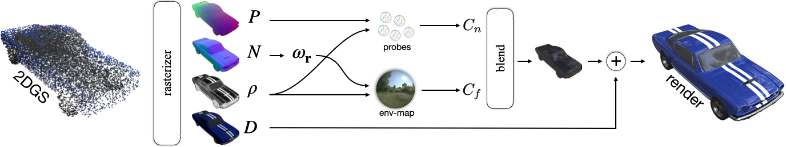
The 2DGS scene is rasterized into buffers of positions, normals, roughness, and diffuse colors. In the lighting pass, learnable Spherical Voronoi light probes (near-field) and an environment cubemap (far-field) jointly produce diffuse and specular shading, blended to form the final output. All components are fully explicit and optimized end-to-end.
Left: When illumination is spatially varying but a spatially-invariant model is used, conflicting measurements are averaged, resulting in a blurry reconstruction. Conversely, when a spatially varying model is used, crisp functions can be recovered. Right: Effect of the temperature \( \tau \) on SV sharpness, from smooth diffuse-like lobes to sharp, highly specular peaks.
Our method achieves comparable quality to Zip-NeRF on the Mip-NeRF360 dataset, while delivering significantly higher accuracy on other standard benchmarks such as NeRF Synthetic and Tanks & Temples.
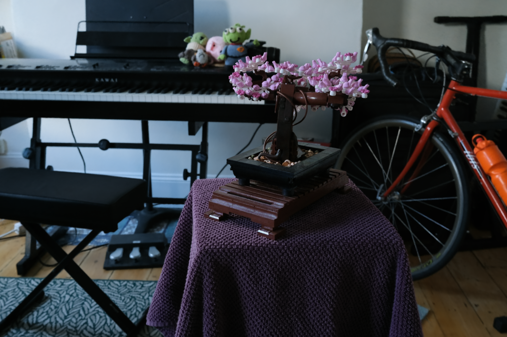
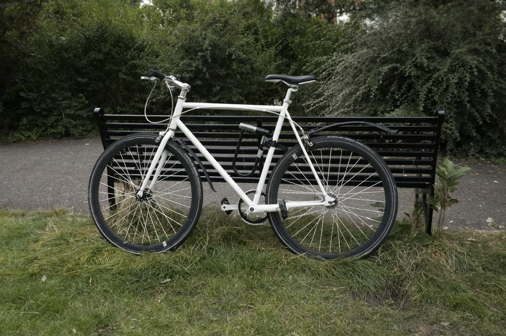
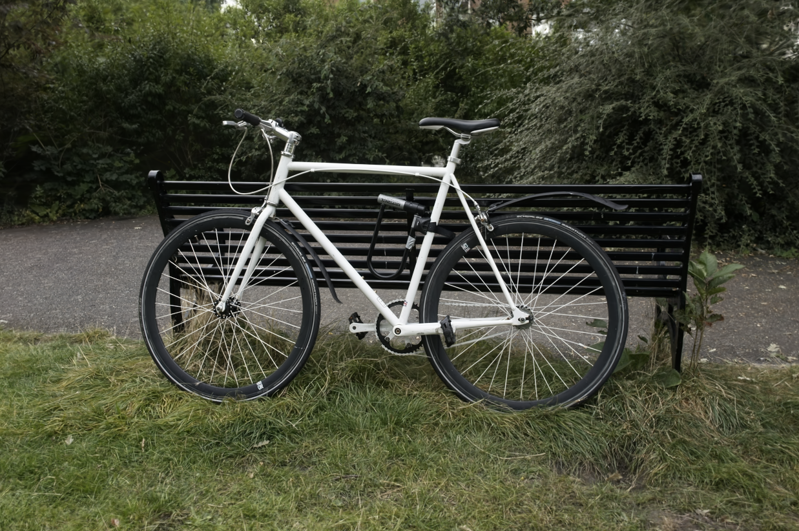
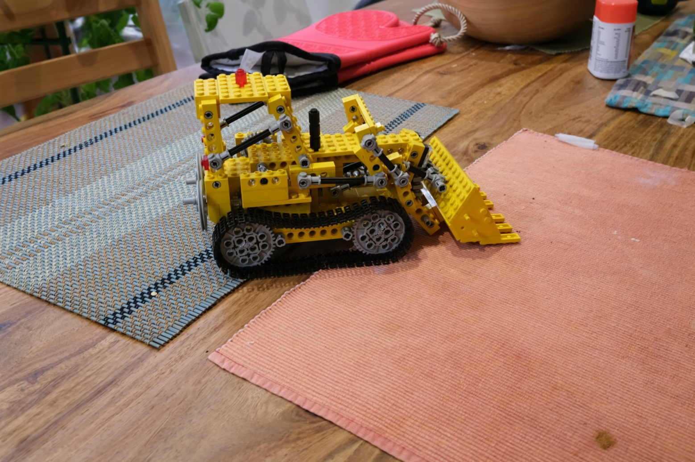
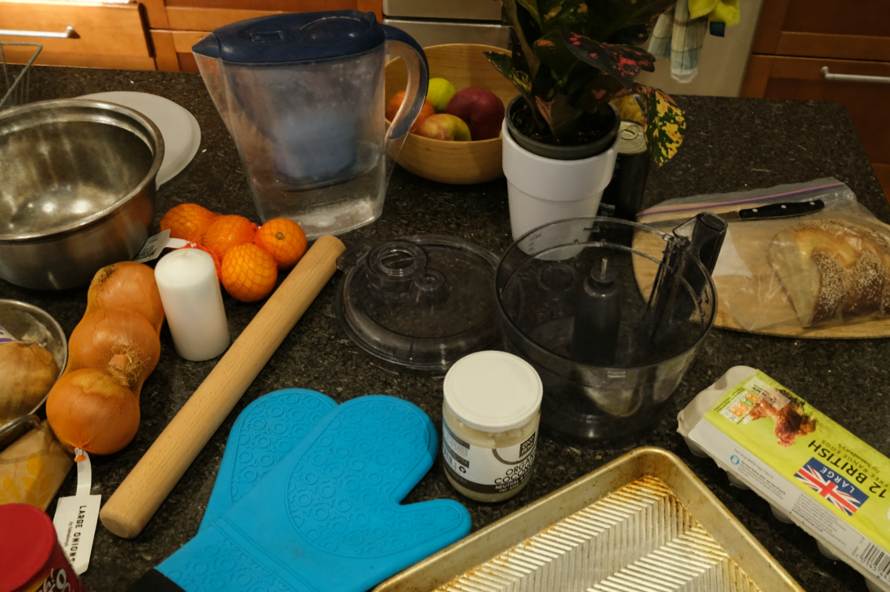
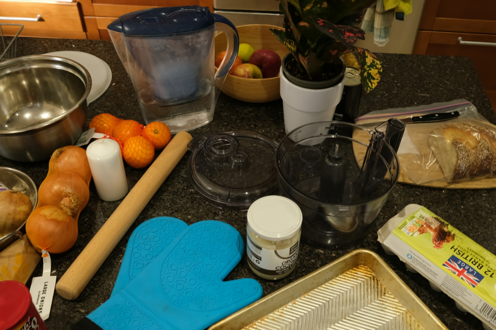
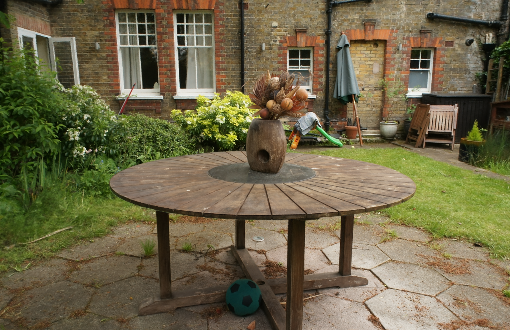
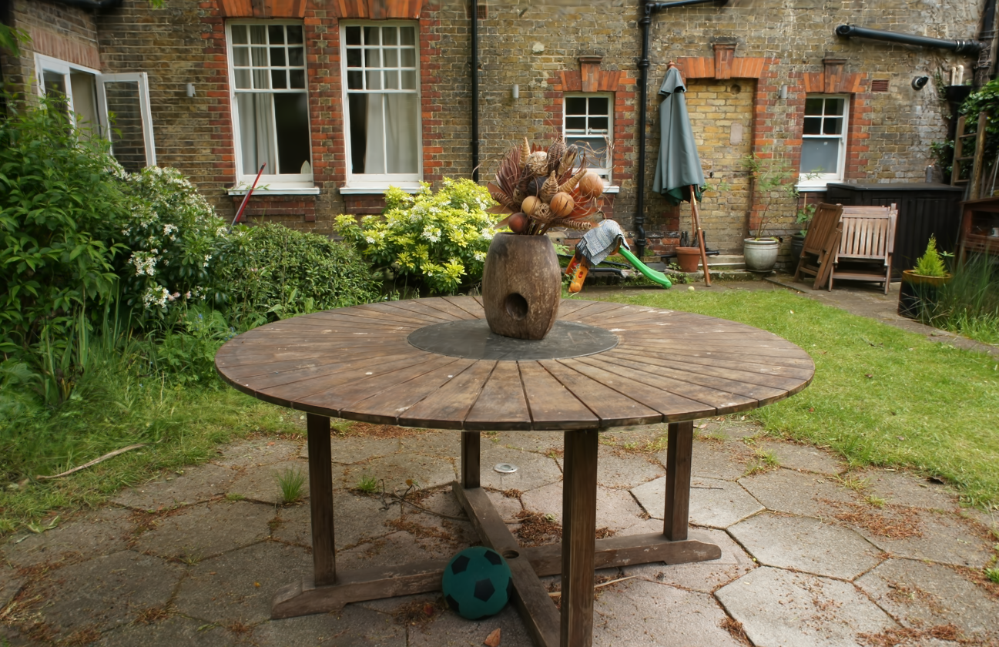
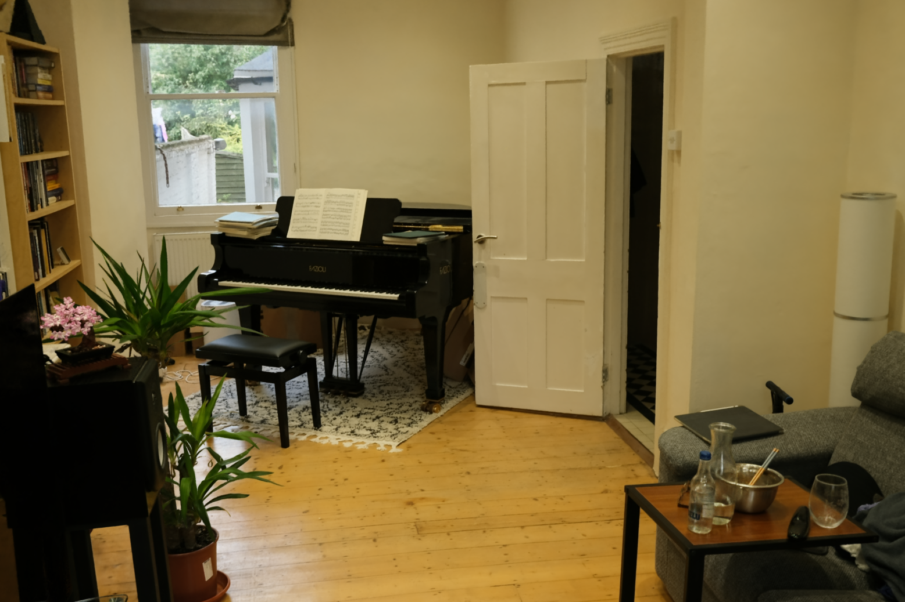
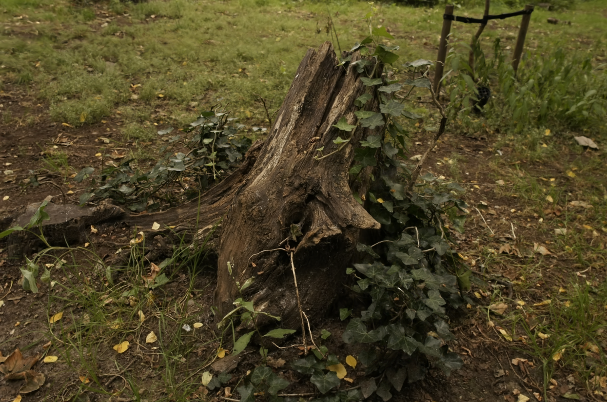
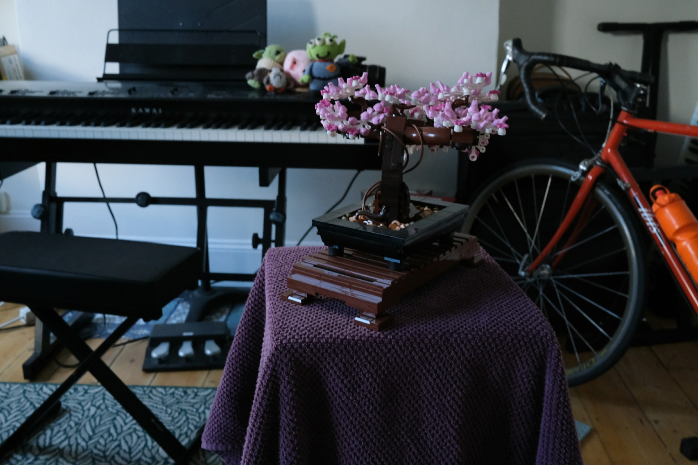
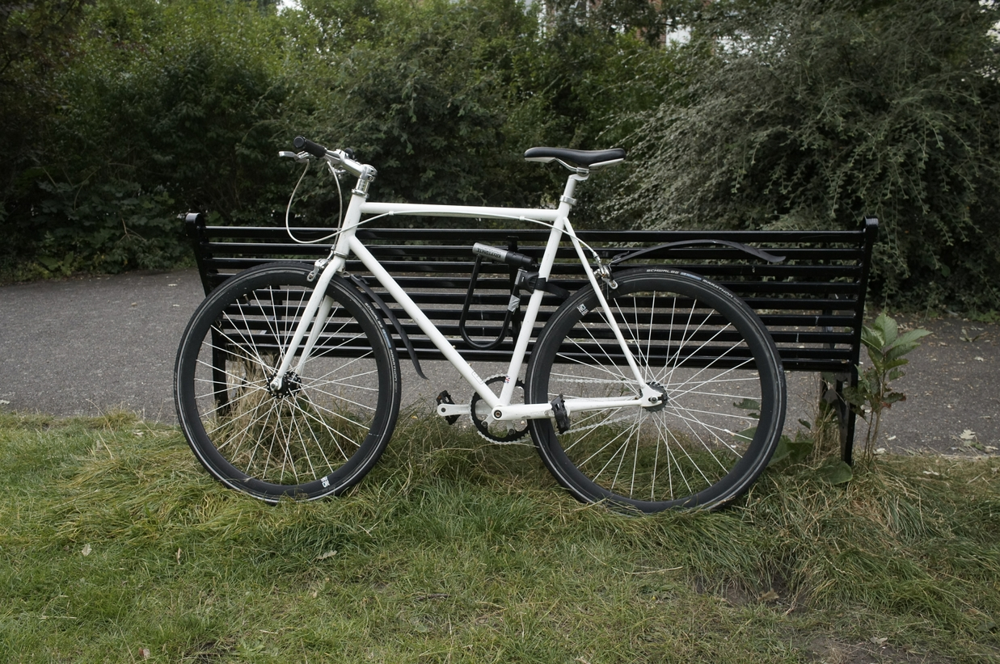
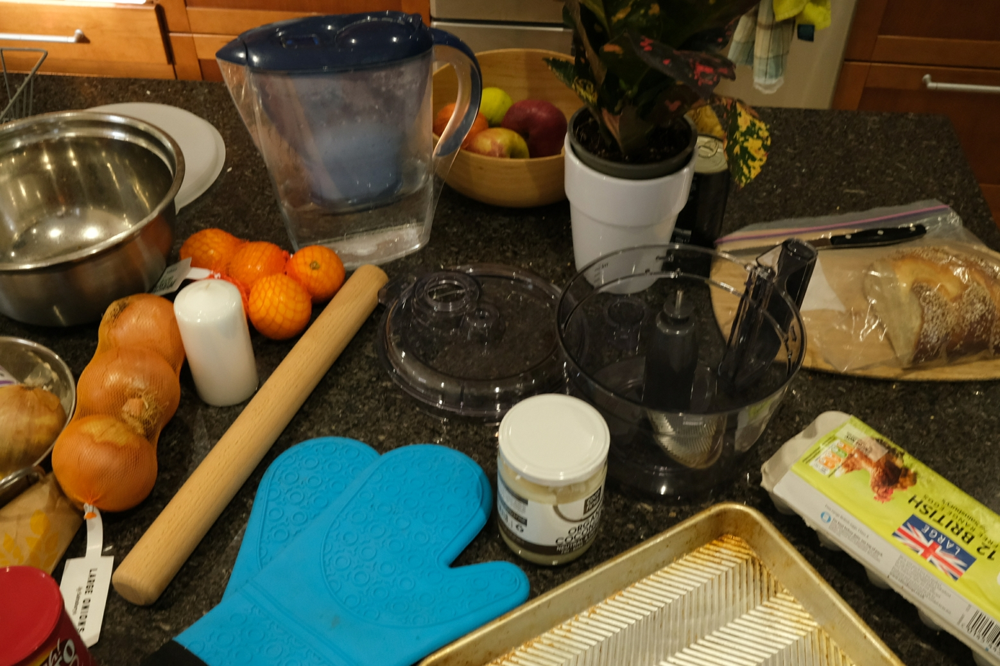
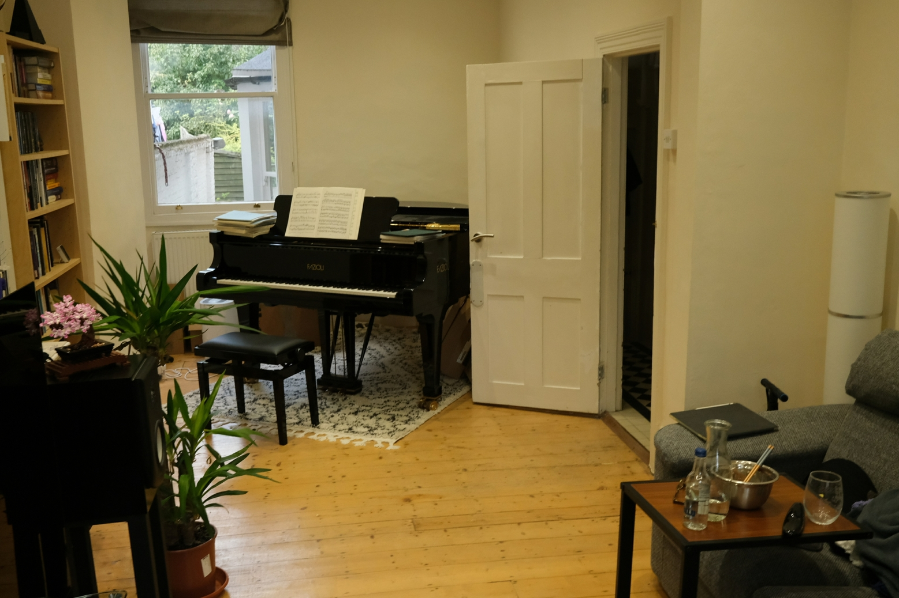
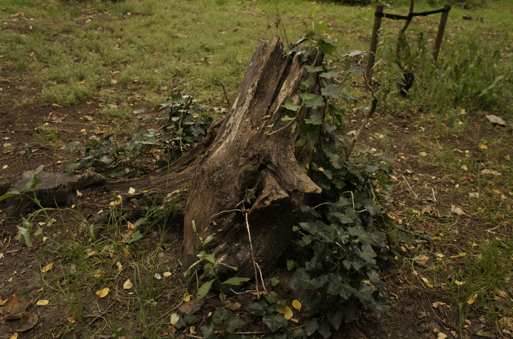
Our method allows for a detailed scene decomposition into physically interpretable components, such as diffuse, specular, surface normals, and roughness.
Our method produces slightly better results than Ref-GS on standard reflective benchmarks, while significantly outperforming other baseline methods. It is a fully explicit approach based on learnable light probes parameterized by a Spherical Voronoi function.
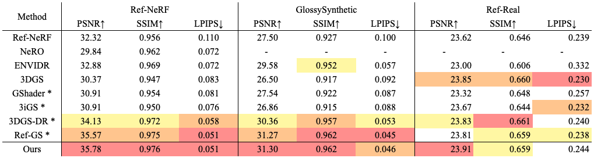
Our method consistently achieves top-tier performance across all datasets. Methods marked with † were retrained for consistency, and most results were successfully reproduced. Ref-GS performs slightly better than originally reported on Ref-NeRF and GlossySynthetic, but worse on Ref-Real, likely because the original implementation did not use the dataset’s pre-downsampled input images.

 Code
Code
 Colab
Colab